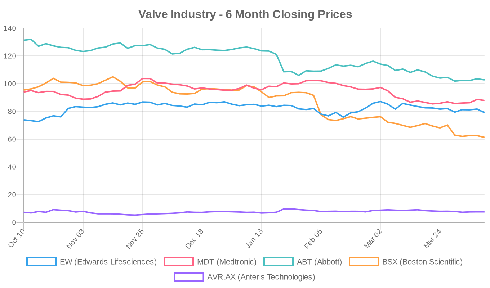
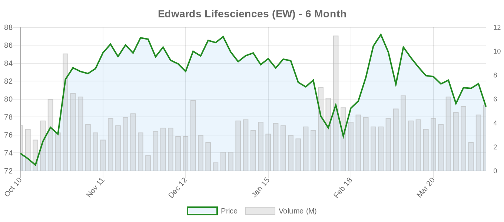
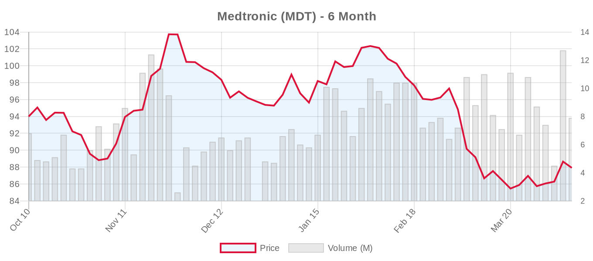
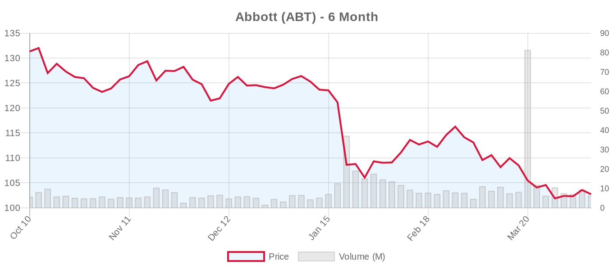
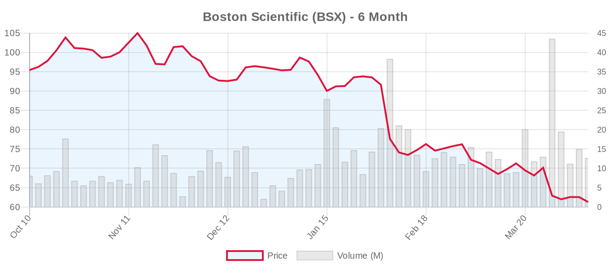
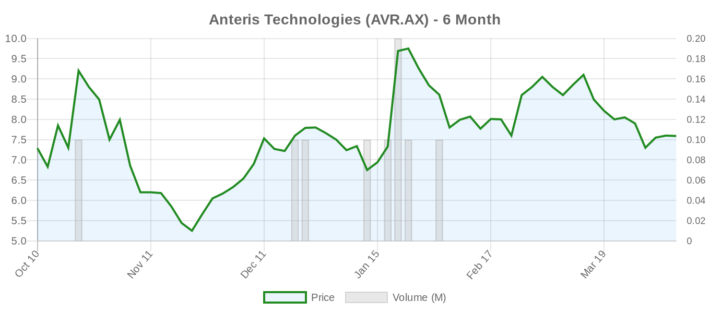

|
||||||||
|
April 10, 2026 By E. Nolan Beckett |
||||||||
|
||||||||
Executive SummaryToday's biggest development comes from CMS, which has opened a new National Coverage Analysis for TAVR (CAG-00430R2) — a process that could reshape reimbursement policy for transcatheter aortic valve replacement across the United States. In clinical research, a JACC: Cardiovascular Interventions study tests the 2025 ESC/EACTS tricuspid guidelines against real-world registry data, finding that patients the guidelines would exclude from transcatheter treatment still get meaningful symptom relief — raising tough questions about where to draw the line. Meanwhile, the tricuspid valve replacement space is heating up fast, with TRiCares receiving FDA IDE approval for its pivotal TTVR trial and VDyne preparing a head-to-head pivotal study against Edwards' EVOQUE system. Edwards Lifesciences approaches an April 22 earnings call under investor scrutiny, with its CFO selling $1 million in shares this week. For the clinical audience: two JACC-family publications anchor today's digest. Stolz et al. provide the first real-world stress test of the new ESC/EACTS Class IIa recommendation for transcatheter tricuspid intervention, analyzing over 1,600 T-TEER patients from the EuroTR registry and asking whether the guideline exclusion criteria — severe LV dysfunction, RV dysfunction, or precapillary pulmonary hypertension — actually predict futility or merely higher risk. Separately in JACC: Cardiovascular Imaging, opportunistic CT-derived periaortic fat attenuation emerges as a novel mortality marker post-TAVR. The CMS coverage review, the TRiCares IDE, and KingstronBio's first-in-human TMVR implant in China round out a day that touches every valve position. Today's Key Findings[NOTABLE] CMS Opens National Coverage Analysis for TAVR (CAG-00430R2): The Centers for Medicare & Medicaid Services has initiated a reconsideration of the national coverage determination for TAVR. This is a potentially landmark regulatory event. The current NCD, last updated in 2019, governs which patients qualify for Medicare-covered TAVR and mandates participation in a national registry (TVT Registry). A reconsideration could expand — or restrict — coverage criteria, particularly relevant as TAVR indications push into lower-risk, younger, and asymptomatic populations. Notably, this review comes as the 2025 ESC/EACTS guidelines have lowered the TAVI-preferred age threshold to ≥70 and the EARLY TAVR trial supports intervention in asymptomatic severe AS. How CMS aligns its coverage with evolving guideline recommendations will have enormous downstream effects on volumes, reimbursement, and patient access. Source: CMS.gov [NOTABLE] ESC Tricuspid Guidelines Meet Real-World Data (JACC: Cardiovascular Interventions): Stolz et al. applied the 2025 ESC/EACTS guideline exclusion criteria to 1,626 T-TEER patients from the EuroTR registry and found that 13.1% would have been classified as "OMT candidates" — patients the guidelines say should receive medical therapy rather than transcatheter intervention. These excluded patients had significantly worse HF hospitalization-free survival (~59% vs ~74%, P<0.001), but — critically — achieved comparable rates of NYHA class improvement (56% vs 60%, P=0.68). This creates a genuine clinical tension: the guidelines are right that outcomes are worse in these patients, but symptom relief appears similar. The editorial question is whether we should deny a procedure that provides meaningful palliation because hard outcomes are worse in a sicker population. Without randomized data in this subgroup, the authors wisely call for multidisciplinary evaluation rather than blanket exclusion. JACC Cardiovasc Interv 2026 [NOTABLE] Periaortic Fat Attenuation as Post-TAVR Mortality Marker (JACC: Cardiovascular Imaging): Brendel et al. report that opportunistic CT-derived periaortic fat attenuation — a measure of perivascular inflammation obtainable from routine pre-TAVR CT planning scans — predicts mortality after TAVR. While the full abstract is not available, this fits into the growing CT-based risk stratification ecosystem for TAVR patients. If validated, this could add a zero-cost imaging biomarker to pre-procedural planning. JACC Cardiovasc Imaging 2026 Aortic Valve (TAVR/TAVI)CMS National Coverage Analysis ReopenedThe CMS reconsideration of TAVR national coverage (CAG-00430R2) is the policy story of the week. The existing NCD has been the guardrail for TAVR in the US since 2012 (with updates in 2019), requiring specific patient selection criteria and mandatory participation in the STS/ACC TVT Registry. As TAVR has expanded from inoperable patients to low-risk cohorts, and trials like EARLY TAVR push toward asymptomatic severe AS, the current NCD framework may no longer reflect clinical practice. Key questions for the review: Will CMS expand coverage to asymptomatic patients? Will it address the age threshold debate (ACC/AHA favors shared decision-making from 65-80; ESC now says TAVI-preferred at ≥70 with tricuspid AV)? And will registry participation requirements evolve? Stakeholders should monitor the comment period closely. CMS.gov Post-TAVR Anticoagulation: Apixaban vs. Rivaroxaban in AFib PatientsCardiovascular Business reports that post-TAVR bleeding in atrial fibrillation patients is significantly less common with apixaban compared to rivaroxaban. While specific study details are limited in the news report, this aligns with broader cardiology literature suggesting different safety profiles among DOACs. For TAVR patients with concomitant AF — a common comorbidity in this elderly population — anticoagulation strategy remains a critical quality metric. Clinicians should note that neither the 2020 ACC/AHA nor 2025 ESC/EACTS valve guidelines specify a preferred DOAC agent post-TAVR, though both recommend anticoagulation for concurrent AF. Cardiovascular Business TAVR Explant: Surgeons Weigh In on Options and RisksThe Good Men Project published a patient-facing article featuring cardiac surgeons discussing TAVR explantation — a topic of growing importance as the TAVR population ages and valves degenerate. This is an increasingly visible issue: recent data show THV explantation carries 12-17% mortality, and redo-TAVR (valve-in-valve) accounts for 84% of reinterventions, though only 1.7% of TAVR patients require reintervention at 8 years. The 2025 ESC/EACTS guidelines now emphasize "lifetime management" planning at the index TAVR procedure, including CT assessment of future valve-in-valve feasibility and coronary access. For patients considering TAVR — especially those under 70 — this conversation should happen before the first procedure, not after failure. The Good Men Project LVOT Obstruction After TAVI in Severe LVH: A Cautionary CaseYoshiga et al. report a case of acute pulmonary congestion caused by dynamic LVOT obstruction with systolic anterior motion of the mitral valve following TAVI in an 88-year-old woman with marked left ventricular hypertrophy. LVEDP rose to 35 mmHg, requiring reintubation. This case underscores a well-recognized but under-discussed complication risk: patients with severe LVH and small ventricular cavities are susceptible to post-TAVI hemodynamic collapse from SAM-induced LVOT obstruction, particularly when acute afterload reduction unmasks the gradient. Pre-procedural CT and echo assessment of LVH severity and mitral-septal distance should inform procedure planning in this subset. A&A Practice 2026 CKM Syndrome and TAVI Outcomes (Letter/Reply)Götzinger et al. published a reply in the European Journal of Heart Failure regarding their prior work on cardiovascular-kidney-metabolic (CKM) syndrome prevalence and outcomes after TAVI. While the reply itself lacks an abstract, the underlying research highlights the growing recognition that multi-organ comorbidity clusters — rather than isolated risk factors — drive post-TAVR outcomes. This dovetails with the periaortic fat attenuation work in JACC Cardiovascular Imaging, suggesting we need more holistic risk profiling beyond STS-PROM scores. Eur J Heart Fail 2026 Mitral Valve (MitraClip, PASCAL, TMVR)M-TEER Resolves Hemolytic Anemia After Surgical MV RepairScheffler et al. report an instructive JACC Case Report: a 78-year-old woman with prior surgical MV repair developed severe hemolytic anemia from recurrent eccentric MR caused by anterior leaflet prolapse, with a high-velocity jet striking the annuloplasty ring. M-TEER reduced MR to mild and resolved hemolysis. This case illustrates two important points: (1) valvular (not just paravalvular) regurgitation after surgical repair can cause clinically significant hemolysis, and (2) TEER serves as a viable bailout option in patients at prohibitive risk for redo surgery. While TEER for failed surgical repair is technically challenging — requiring precise clip placement relative to the ring — this report adds to the growing literature supporting its use as a complementary rather than competing technology. JACC Case Reports 2026 KingstronBio's ProStyle M® TMVR: First Implant in ChinaKingstronBio announced the first implant of its ProStyle M® transcatheter mitral valve system in a national multicenter confirmatory study in China. Details on the device design, access route, and initial outcomes are limited in the press release, but this adds to the expanding global TMVR pipeline. The transcatheter mitral replacement space remains fiercely competitive and technically challenging, with Medtronic's Intrepid and Edwards' SAPIEN M3 among the more advanced Western programs. The Chinese market represents a significant opportunity given the prevalence of rheumatic mitral disease, though regulatory pathways and patient populations differ meaningfully from Western RCTs. We await clinical data before drawing any conclusions about this device's positioning. PA Media Tricuspid Valve (TriClip, TTVR)ESC Guideline Exclusion Criteria Don't Predict Futility of Symptom Relief (JACC: Cardiovascular Interventions)The Stolz et al. study from EuroTR deserves deeper examination. The 2025 ESC/EACTS guidelines gave transcatheter tricuspid intervention a Class IIa recommendation — a historic milestone — but explicitly excluded patients with severe LV dysfunction (LVEF <30%), severe RV dysfunction (TAPSE <17mm and RV FAC <17%), or precapillary pulmonary hypertension. These exclusions were intended to avoid futile procedures. But the EuroTR data complicate this clean framework: among 213 "OMT candidate" patients (13.1% of the cohort), T-TEER still delivered comparable NYHA improvement rates (~56% vs ~60%). The catch — and it's a significant one — is that HF hospitalization-free survival was substantially worse across all excluded subgroups (54-59% vs 73-74%). Several important caveats apply. This is a non-randomized registry comparison; patients who underwent T-TEER despite guideline exclusion criteria likely had clinical features that made their teams judge the procedure worthwhile, introducing selection bias. We don't know what outcomes would have been without intervention. The comparable symptom improvement could reflect regression to the mean, placebo effect, or genuine hemodynamic benefit. And symptom relief without hard-outcome improvement raises the familiar TAVR-in-moderate-AS question: does feeling better matter if you don't live longer? The answer is arguably yes for a palliative population, but we need RCTs — not registries — to know whether we're helping or hurting these patients. JACC Cardiovasc Interv 2026 TREY Registry: TR Prevalence and Phenotyping in the ElderlyAbdelghani et al. present the TREY Registry (NCT05784883), a prospective study of 435 patients aged ≥60 that provides important foundational data on secondary TR mechanisms. Key findings: 42% had mild TR and 16% had moderate/severe TR — underscoring the enormous prevalence in older adults. Even mild TR was associated with significant right-heart remodeling (larger tricuspid annulus, increased tenting, RV dilation). Three TV remodeling criteria (annular diameter, tenting area, lateral leaflet length) predicted moderate/severe TR, with 72.4% of patients meeting all three having significant TR. Perhaps most clinically useful is the novel TH/AD ratio (tenting height/annular diameter), which differentiated ventricular from atriogenic functional TR with high accuracy (AUC 0.94, cut-off 0.185). This distinction matters enormously for treatment selection: atriogenic TR (lower TH/AD) may respond differently to annuloplasty or TEER than ventricular TR with significant tethering. At median follow-up, mortality was significantly higher only when TR reached moderate/severe severity (41.5% vs ~20%), reinforcing the 2025 ESC/EACTS emphasis on intervening before end-stage right-heart failure develops. Cardiology 2026 TRiCares Receives FDA IDE Approval for TTVR Pivotal Trial[NOTABLE] TRiCares has received FDA approval to begin its Investigational Device Exemption (IDE) pivotal trial for its transcatheter tricuspid valve replacement (TTVR) system. This approval marks a significant milestone for the tricuspid replacement space, which remains earlier in development than tricuspid repair (TEER). The competitive landscape is intensifying: Edwards' EVOQUE system (TRISCEND II trial) has the most mature data, Abbott's TriClip dominates the TEER space based on TRILUMINATE, and now TRiCares joins VDyne (see trial updates below) in the replacement pipeline. The 2025 ESC/EACTS guidelines gave transcatheter TR treatment a Class IIa recommendation based primarily on TEER data, though TRISCEND II contributed evidence for replacement. As multiple replacement platforms enter pivotal trials, the key question is whether replacement offers enough benefit over repair to justify higher procedural complexity and complication rates (notably bleeding and pacemaker needs). DI Cardiology Surgical vs. Transcatheter ComparisonsNo new head-to-head comparison studies today, but two items bear on this ongoing debate: TAVR Explant Discussion: The patient-education article on TAVR failure and explantation reinforces the durability conversation that increasingly defines the SAVR vs. TAVI discussion. With THV explantation mortality at 12-17% and redo-TAVR the dominant reintervention strategy, lifetime management planning — emphasized in the 2025 ESC/EACTS guidelines — is no longer theoretical. For patients under 70 (under 65 per ACC/AHA), SAVR remains the guideline-preferred approach in both frameworks precisely because of these unanswered durability and reintervention questions. Sex-Based Outcomes Review (JACC Advances): Liu et al. provide a state-of-the-art review examining sex-specific differences in transcatheter structural interventions in older adults. While lacking an abstract with specific findings, this review addresses a critical evidence gap: women comprise the majority of the elderly structural heart disease population but have been historically underrepresented in device trials. Sex differences in anatomy (smaller annuli, more tortuous vasculature), comorbidity profiles, and procedural outcomes likely affect the SAVR-vs-TAVI calculus differently in women versus men. Both guideline frameworks are sex-agnostic in their age thresholds, which may not be optimal. JACC Advances 2025 Device & TechnologyNitric Oxide-Releasing Hydrogel Coating for Bioprosthetic ValvesZheng et al. in Acta Biomaterialia describe a novel glycocalyx-mimetic hydrogel coating (AHS-P) for bioprosthetic heart valves that integrates antithrombotic, endothelialization-promoting, and immunomodulatory functions through nitric oxide release from incorporated L-arginine. In preclinical testing, the coating reduced platelet adhesion and thrombosis, promoted endothelial cell growth via RhoA-ROCK and PI3K/AKT/mTOR pathways, shifted macrophage polarization toward the anti-inflammatory M2 phenotype, and significantly reduced calcification in a rat subcutaneous implantation model. This is early-stage materials science, but it addresses the central limitation of bioprosthetic valves — degeneration at 10-15 years due to calcification, thrombosis, and inflammation. If translatable to clinical valves, such coatings could extend THV longevity and potentially shift the SAVR-vs-TAVI calculus by addressing the durability concern that currently favors mechanical valves or SAVR in younger patients. However, the translational gap from rat subcutaneous models to hemodynamic valve conditions is enormous, and we are likely a decade or more from clinical application. Acta Biomaterialia 2026 TAVR Highlights RoundupCardiovascular Business published a roundup covering AI-based alerts for TAVR complications, guidance on when PCI can safely be staged after TAVR, a key FDA approval (details unspecified in the snippet), new stroke prevention technology, and acute kidney injury risk factors. These topics reflect the maturation of the TAVR ecosystem: as the procedure itself becomes routine, the quality frontier is shifting to complication prevention, periprocedural optimization, and AI-assisted clinical decision support. Cardiovascular Business Heart Valve Research Grant — South AfricaThe University of Cape Town announced a multi-million-rand grant to accelerate heart valve research. In a region where rheumatic heart disease remains endemic and access to surgical valve replacement is severely limited, this investment is particularly meaningful. The 2025 Accra Declaration on Upskilling and Cost-Effective Cardiac Surgery in Africa highlighted the gap between disease burden and surgical capacity. Innovation in affordable valve technologies — whether mechanical valves with simplified anticoagulation, tissue-engineered solutions, or percutaneous approaches adapted to rheumatic pathology — could have outsized global health impact. UCT News Regulatory & Policy[NOTABLE] CMS TAVR National Coverage Analysis (CAG-00430R2): As detailed above, CMS has opened a formal reconsideration of the TAVR national coverage determination. This is the most consequential US regulatory development for TAVR since the 2019 coverage update that followed low-risk trial approvals. The NCA process typically takes 6-12 months and includes a public comment period, evidence review, and potential Medicare Evidence Development & Coverage (MED) advisory panel meeting. Key implications:
All stakeholders — physicians, hospitals, device manufacturers, and patient advocacy groups — should prepare for the public comment period. CMS.gov TRiCares FDA IDE Approval: FDA has approved TRiCares to proceed with its IDE pivotal trial for its TTVR system. This is notable as one of a growing number of transcatheter tricuspid replacement devices entering the pivotal phase in the US, reflecting FDA's willingness to build the evidence base for this young therapy class. Industry & MarketThe tricuspid valve replacement market is emerging as the next major competitive arena in structural heart. Today's TRiCares IDE approval follows VDyne's registration of a 730-patient pivotal trial (TRIVITA) comparing its TTVR system head-to-head against Edwards' EVOQUE — a bold design that signals VDyne's confidence and Edwards' vulnerability as the leading TTVR platform. Edwards itself faces a bifurcated competitive challenge: defending its EVOQUE position in tricuspid replacement while its PASCAL system competes against Abbott's MitraClip in the mitral TEER market (CLASP IID/IIF trial, n=1,247, now active but no longer recruiting). KingstronBio's first ProStyle M® TMVR implant in China adds another player to the crowded transcatheter mitral replacement pipeline, though the Chinese regulatory environment and patient population differ significantly from US/European markets. Medtronic's Intrepid TMVR remains the most advanced Western TMVR program (n=1,056, recruiting). The South African heart valve research grant highlights a small but growing segment of the global valve market: low-cost solutions for rheumatic heart disease in low- and middle-income countries — a market largely untouched by Western device companies. Financial AnalysisEdwards Lifesciences approaches its April 22 earnings report under a cloud of multiple convergent pressures. CFO Scott Ullem sold approximately $1.04 million in shares (roughly 13,000 shares) under a pre-established 10b5-1 trading plan this week — a routine event for C-suite executives, but one that draws attention given the stock's 3.1% decline on April 9 and the proximity to earnings. The sale brings total insider transactions into focus ahead of what could be a pivotal quarter for the company. The broader macro environment is weighing on all medtech names. Boston Scientific — rated "strong buy" by analysts — has seen the steepest six-month decline in the group, down 35.8% and trading near its 52-week low of $60.59. This is a remarkable destruction of value for a company with consensus analyst targets near $99. The disconnect between analyst targets and market prices across the entire sector suggests macro-driven selling (tariff fears, rate uncertainty, risk-off rotation) rather than fundamental deterioration of structural heart franchises. Abbott, reporting earnings on April 16, is down 21.8% over six months and also trading near its 52-week low. Medtronic, the most diversified of the group, has held up relatively better at -6.5%. For Edwards specifically, the GF Score of 98/100 and substantial gap between its $79.15 close and $96.93 analyst target (22.5% upside) suggest the market is pricing in risks that analysts either dismiss or haven't yet incorporated. The CMS NCA reconsideration adds uncertainty: while an expanded NCD would be bullish for TAVR volumes, any restrictive language could dampen growth expectations. The ESC's lowering of the TAVI age threshold to ≥70 is structurally positive for Edwards' European volumes, but the near-term stock story is likely to be dominated by Q1 earnings delivery, guidance, and management commentary on market conditions. Valve Industry Stocks Edwards Lifesciences (EW)
Medtronic (MDT)
Abbott Laboratories (ABT)
Boston Scientific (BSX)
Anteris Technologies (AVR.AX)
Private Companies to Watch: JenaValve Technology (aortic regurgitation focus — relevant as ESC 2025 gave TAVI for AR a IIb recommendation), Meril Life Sciences (Myval balloon-expandable THV, validated in LANDMARK trial), and J Valve Technology remain private. JenaValve's AR-specific platform becomes more interesting as the ESC formally recognizes TAVI-for-AR, even at the IIb level. Market Outlook: The structural heart sector is caught in a painful divergence: clinical momentum is accelerating (new guidelines, expanded indications, novel devices entering pivotal trials), while stock prices are near 52-week lows across the board. This likely reflects macro headwinds — tariff uncertainty, rate expectations, and broad medtech de-risking — rather than any weakening of structural heart fundamentals. The upcoming earnings gauntlet (Abbott April 16, Edwards and Boston Scientific April 22, Medtronic May 20) will test whether companies can reassure investors with guidance that reflects the growing addressable market. The CMS NCA reconsideration adds a wild card that could significantly move Edwards and Medtronic shares depending on direction. Clinical Trial UpdatesAortic Valve Trials
Mitral Repair Trials
Mitral Replacement Trials
Tricuspid Repair Trials
Tricuspid Replacement Trials
Other Notable Trials
Social & Conference HighlightsNo major conference presentations or notable social media developments today. The next major structural heart meetings to watch are EuroPCR (May 2026) and TVT (June 2026), where updated TRILUMINATE long-term data, CLASP IID/IIF results, and early DurAVR findings may be presented. Today's digest spotlights a maturing field grappling with the tension between clinical enthusiasm and evidentiary rigor. The CMS NCA reconsideration will set the US reimbursement framework for TAVR's next chapter, while real-world tricuspid data from EuroTR remind us that guideline exclusion criteria — however well-intentioned — are blunt instruments applied to complex patients. With Abbott reporting April 16 and Edwards and Boston Scientific on April 22, the next two weeks will test whether Wall Street shares the clinical community's confidence in structural heart's expanding frontier. — E. Nolan Beckett, The Valve Wire |
||||||||
|
|
||||||||
|
||||||||
|